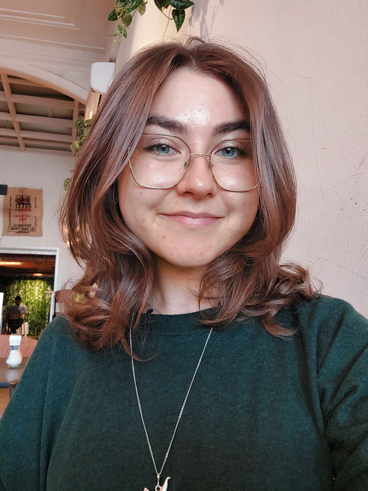

Hi everyone! I'm Alma and I'm 23 years old. I'm from Latvia, but I've lived in the Netherlands for about 4 years now.In my spare time, I like to read (here is my Storygraph account), as well as watch films.
Some books I've read recently are:
Some of the films I've seen (and enjoyed) recently are:
I also love talking about languages, media, art, and anything else, really. :)
Before starting this master's programme, I studied English Language and Culture at Leiden University. I also worked at the university as a research assistant on the project “Language of the Poor in Late Modern Scotland”. (If you're interested, here is the project website). I've also worked as a student mentor.